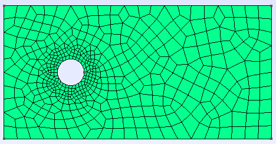
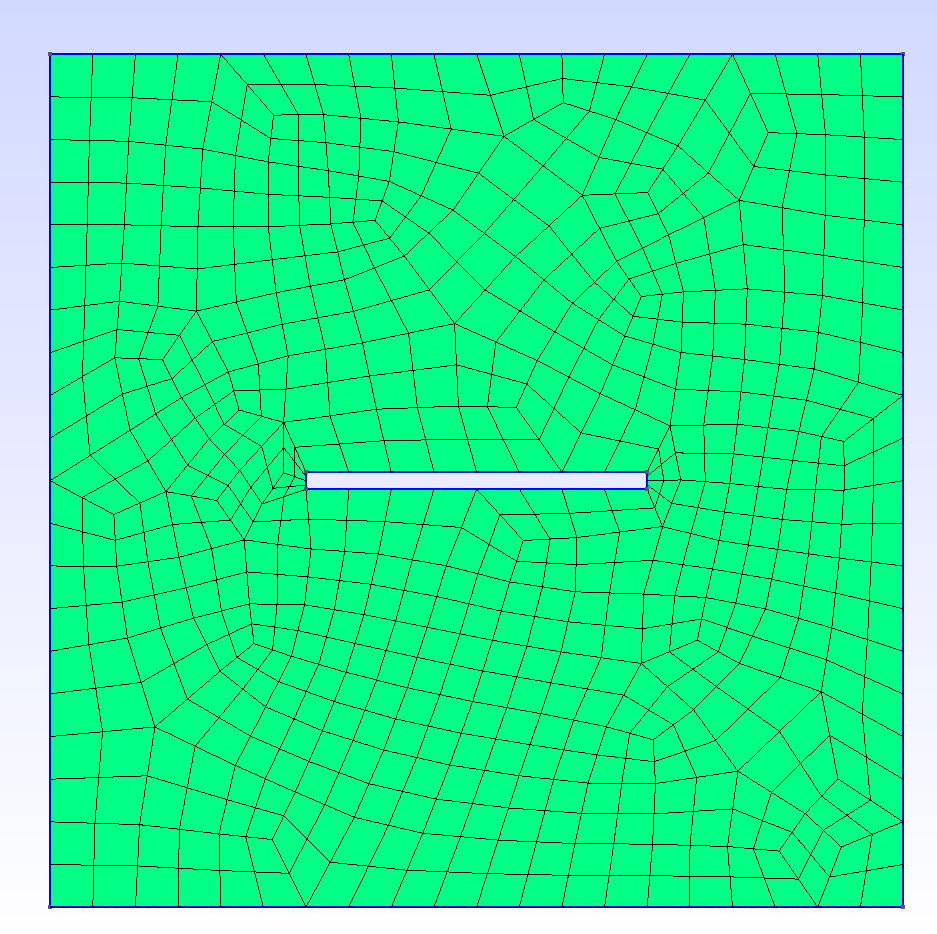
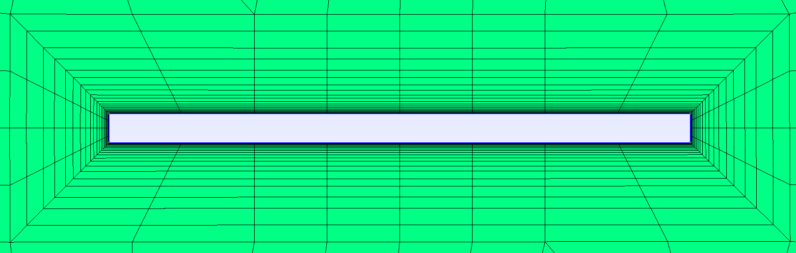
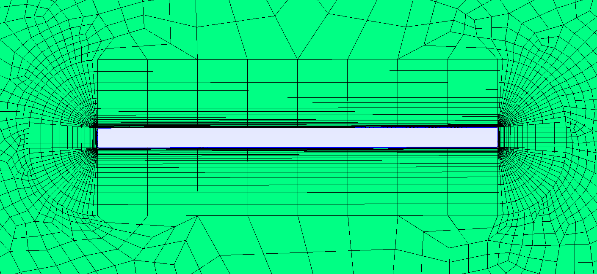
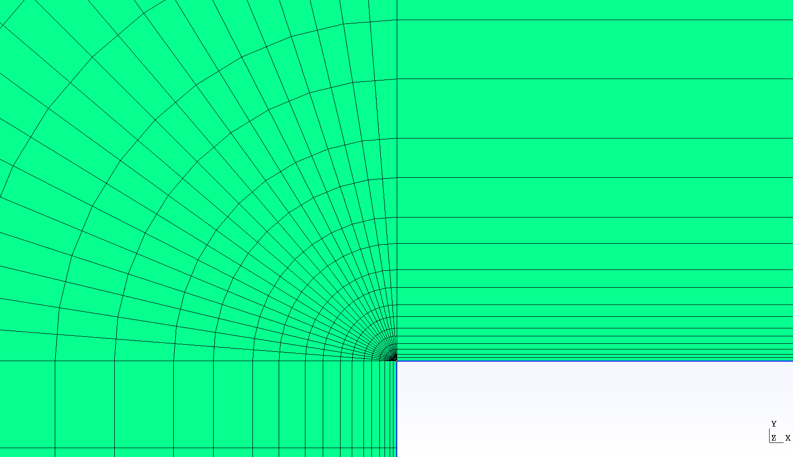
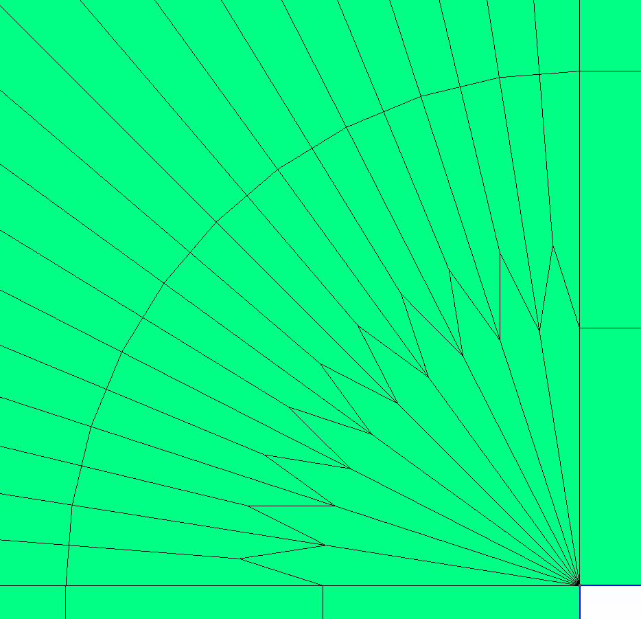

Introduction on How to Use GMSH#
See also
.geo files are available in the lethe-utils github folder
Installation#
See the GMSH website for installation. For the stable release, the GMSH executable needs to be extracted from a compressed file.
Hint
For Linux users, after extracting the TGZ file, it is recommanded to add the bin folder of the GMSH installation in your .bashrc script with export. It will be easier to access GMSH.
Geometry#
This guide uses mainly this simple geometry:

Create and Edit the .geo File#
The geometry is written in a .geo file:
Start
GMSHFile > New...- Either use the folders navigator or directly specify the path and filename in
Filename for example:
/home/<user>/Documents/Mesh/<filename>.geo
- Either use the folders navigator or directly specify the path and filename in
- Specify the Kernel to use: Built-in kernel or OpenCASCADE Kernel
The Built-in kernel uses the raw code of GMSH to create a geometry from points, to curves, then surfaces and finally volumes (in 3D).
The OpenCASCADE kernel uses simplified shapes to create the same geometry with fewer steps.
You can then open the created .geo file in a simple text editor, either by:
opening the file in your folder, or
Left pannel: Modules > Geometry > Edit script
Warning
- After each modification in the
.geofile, save it and load the modifications inGMSH: Left pannel: Modules > Geometry > Reload script
Built-in kernel#
It is quite easy to create a .geo file directly by coding line by line the geometry that you want to produce.
Tip
Using a Built-in kernel gives you full control over the geometry creation, which is necessary to create a Structured - Quad Mesh (transfinite) mesh. However, it usually takes more time than using functions available in OpenCASCADE Kernel.
- Set the points that delimits the shape being traced. The attribute
Pointis essential to set a point of the shape and to specify its coordinates. For the rectangle, we will have:
// Point(<id>) = {<X>, <Y>, <Z>, <Prescribed mesh size at point>} Point(1) = {-5, -5, 0, 1.0}; Point(2) = {-5, 5, 0, 1.0}; Point(3) = {15, -5, 0, 1.0}; Point(4) = {15, 5, 0, 1.0};
Hint
See Mesh for more information about the
<Prescribed mesh size at point>.For the circle, we need 3 points to trace a circle arc:
Point(5) = {0, 0, 0, 1.0}; Point(6) = {-1, 0, 0, 1.0}; Point(7) = {1, 0, 0, 1.0};
- Set the points that delimits the shape being traced. The attribute
- Close the shape with lines.
For the rectangle (straight lines):
// Line(<id>) = {<id of start point>, <id of end point>} Line(1) = {1, 2}; Line(2) = {2, 4}; Line(3) = {4, 3}; Line(4) = {3, 1};
For the circle arcs:
// Circle(<id>) = {<id of start point>, <id of middle point>, <id of end point>} Circle(5) = {6, 5, 7}; Circle(6) = {7, 5, 6};
Warning
Circleare also considered asLine, so the<id>needs to differ from theLineones.
Close the lines with
Curve Loopand then create a surface out of it withPlane Surface. The final plane surface will be delimited by the curve loops of both the rectangle and the circle.
// Curve Loop(<id>) = {<id of line>, ...}
Curve Loop(1) = {1, 2, 3, 4};
Curve Loop(2) = {5, 6};
// Plane Surface(<id>) = {<id of curve loop>, ...}
Plane Surface(1) = {1, 2};
Tip
All the lines of code can be directly made with the GUI of gmsh with some clicks and keyboard shortcuts.
OpenCASCADE Kernel#
In the GMSH geometry section of the GMSH GUI (see Left pannel: Modules > Geometry > Elementary entities > Add), you can add directly multiple 2D or 3D common geometries with a simple click thanks to OpenCASCADE kernel. GMSH will automatically open a window where you can easily set the characteristic lenghts of the geometry, and update the .geo file.
Warning
Always save your .geo file in your text editor before modifying it through the GMSH GUI. If you modify the .geo file without saving it, GMSH will not update it.
For our example (circle in a rectangle in 2D):
Select the
Diskgeometry available with OpenCASCADE, set the radius to 1 (for X and Y) and center it at \((x,y)=(0,0)\).Select the
Rectanglegeometry, set the length (DX) to \(20\), the width (DY) to \(10\) and the left bottom corner to \((x,y)=(-5,-5)\).
Note
If you click on Edit script, you will see that the OpenCASCADE kernel has been added to the code as SetFactory("OpenCASCADE");.
The rectangle is set with Rectangle(1) = {-5, -5, 0, 20, 10, 0}; and the circle with Disk(2) = {0, 0, 0, 1, 1};.
Tip
The Disk and Rectangle are already considered as surfaces in gmsh, there is therefore no need to pass from points, to curves and then surfaces.
Remove the disk surface from the rectangular domain, with OpenCASCADE boolean operation, either via the GUI (
Geometry > Elementary entities > Boolean) or the code:
// BooleanDifference{ Surface{<id of surface to keep>}; Delete; }{ Surface{<id of surface to remove>}; Delete; }
BooleanDifference{ Surface{1}; Delete; }{ Surface{2}; Delete; }
Import CAD File#
Importing CAD files (.step or .stp format) can be particularly convenient for more complex fluid geometries (like pipes) or immersed solids (like an impeller):
Hint
In the case of immersed solids, use a simplified CAD file of the outer shell of the solid, e.g. without any screws or bolts or threads.
File > New...: create a new .geo file (can use OpenCASCADE or Built-in kernel)Files > Merge...: merge the CAD file (.stepor.stpformat) with GMSHTools > Statistics: check that the geometry is loaded (point, curves, surfaces, and volumes in 3D)
See also
You can find a step-by-step video here, with very useful tools as how to inspect your mesh.
Physical Groups#
Warning
This step is essential. Physical groups are used to identify the boundary conditions.
In 2D, the physical groups are curves and in 3D, surfaces. For this example, select Curve in the Modules > Geometry > Physical groups > Add section. Four different physical groups with Curve is needed:
Click on the left line of the geometry for the inlet condition.
Click on the top and bottom lines for the slip condition.
Click on the circle for the no slip condition.
Click on the right line for no condition.
By reloading the script, you will see those four lines of code appear:
// Physical Curve(<id>) = {<id of curve element>, ...}
Physical Curve(1) = {7};
Physical Curve(2) = {6, 9};
Physical Curve(3) = {5};
Physical Curve(4) = {8};
Important
The bc # in the .prm files (Boundary Conditions - CFD) must be the same as the id specified for the physical group.
Then, add a Physical Surface for a 2D geometry, or a Physical Volume for a 3D geometry.
Warning
All cells must be in a Physical group.
While not adding a Physical Surface or Volume would not prevent GMSH from building the mesh, it would result in an error when the mesh is loaded by deal.II. This is often a source of error.
// Physical Surface(id) = {<id of surface element>, ...}
Physical Surface(1) = {1};
Then, define the boundary conditions accordingly in the parameter file :
subsection boundary conditions
set number = 4
subsection bc 0
set id = 1
set type = function
subsection u
set Function expression = 1
end
subsection v
set Function expression = 0
end
end
subsection bc 1
set id = 2
set type = slip
end
subsection bc 2
set id = 3
set type = noslip
end
subsection bc 3
set id = 4
set type = none
end
Mesh#
Unstructured#
Basic:
(optional)
Tools > Options > MeshandGeneralpanel, checkRecombine all triangular meshes: generate a quad mesh.(optional) In the same panel, change
Min/Max element sizeto have smaller/bigger elements, therefor a finer/coarser mesh.Left pannel: Modules > Mesh > 2Dor3D: create the meshTools > Statistics: check that the mesh is generated appropriately (by default, triangles for 2D and hexahedra for 3D)(optional)
Left pannel: Modules > Mesh > Refine by splitting: refine the mesh (beware, it takes more and more time for each refinement)Left pannel: Modules > Mesh > Save: save the mesh in a.mshfile, to be used in Lethe (see Mesh)
By following all the previous steps, the mesh generated looks like below.

Attractors for Local Mesh Refinement#
Attractors can also be used to refine the mesh towards specific edges or surfaces. In this example, attractors could be interesting if the mesh needs to be finer around the sphere. Attractors can only be added by code with the Field attribute.
// LcMax - /------------------
// /
// /
// /
// LcMin -o----------------/
// | | |
// Attractor DistMin DistMax
Set the attractor:
Field[1] = Attractor;
Specify where the refinement needs to be done (near the circle in this case):
Field[1].EdgesList = {5};
Set the minimum/maximum characteristic length and the minimum/maximum distance of the refinement:
Field[2] = Threshold;
Field[2].IField = 1;
Field[2].LcMin = 0.25;
Field[2].LcMax = 1;
Field[2].DistMin = 1;
Field[2].DistMax = 2;
Apply the attractor:
Background Field = 2;
Here is the mesh generated with an attractor around the sphere:
Structured - Quad Mesh#
Warning
The .geo file must be built with the Built-in kernel.
Creating a structured quad-mesh usually takes a lot more time than an unstructured quad-mesh, but provides a full control on the mesh generation. To do so:
Create the geometry accordingly and add construction elements where needed
Tip
Converting an unstructured mesh to a structured mesh usually requires rewritting a good part of the geometry. Begin by drawing by-hand and check that all of your surfaces have only four points each.
Define
Transfinite Line(beforeLine Loop), with:
// Transfinite Loop {<id>, ...} = <number of divisions> Using Progression <num>;
Define the
Line Loop(orCurve Loop) andPlane Surfaceas for a regular meshDefine
Transfinite Surface(instead ofPlane Surface) and recombine them to get a quad mesh:
// Recombine Surface {<id>}
Generate the mesh
See also
You can find a step-by-step video, with a similar geometry (cylinder in flow).
A mesh can also be partially structured, to better encounter for a boundary layer for instance: see the .geo file provided with the Transient Flow around an Ahmed Body example.
Boundary Layer Mesh#
Some problems require special attention in the vicinity of surfaces, especially when one wishes to take into account boundary layer effects. Gmsh is equipped with tools to mesh geometries to obtain high accuracy near surfaces: transfinite meshes and the Field Boundary Layer.
This section first gives an example of the use of the Field Boundary Layer in a simple case. An application on a more complex geometry, a naca0012 airfoil will be shown at end. The .geo and .msh will be available in an example very soon.
First, we define the geometry: a rectangular plate in a square enclosure. We want to mesh the area between the two objects. Without further parameterization of the .geo, we obtain the following mesh:
{kind=link}
We will now use one of the many fields offered by gmsh. These objects allow you to perform various operations on the mesh: define a box where to mesh more finely, calculate a field of distances to a precise point and combine with a Threshold etc. We are interested in the Field BoundaryLayer which allows, given curves and points, to make a boundary layer mesh in the neighbourhood of these entities. The parameters are the following (for an exhaustive list of parameters and possibilities, see the user manual p303-304):
Set the BoundaryLayer Field:
Field[1] = BoundaryLayer;
Specify the curves which define your boundary:
Field[1].CurvesList = {5,6,7,8};
Set the desired characteristics of the boundary layer, size of the elements close/far to the surface, size ratio between two successive layers and maximal thickness of the boundary layer:
Field[1].SizeFar = 1;
Field[1].Size = 0.004;
Field[1].Ratio = 1.5;
Field[1].Thickness = 1;
Specify if the elements must be quadrangles and apply the field:
Field[1].Quads = 1;
BoundaryLayer Field = 1;
Here is the mesh generated with the previous settings around the plate:
{kind=link}
The result is interesting, although the elements at the corners are skewed. This can be solved by feeding the field a list of the points at the corners which will be defined as FanPoints. Then, one may refine the mesh by specifying a number of elements for each fan. Alternatively, the size can be defined as the same for all points, see the commented line below.
Field[1].FanPointsList = {5,6,7,8};
Field[1].FanPointsSizesList = {17,17,17,17};
//Mesh.BoundaryLayerFanElements = 17;
We obtain the following mesh which is much better to account for boundary layer effects:
{kind=link}
If we take a closer look at the surface, the geometric progression of the sizes of elements becomes visible:
{kind=link}
The mesh around the angle looks like this:
{kind=link}
You now know everything about boundary layer meshing. Here is an example on a naca0012 airfoil profile. The .geo will be available on a future example very soon.
{kind=link}
{kind=link}
{kind=link}
Other Tips#
- Use variables and functions to make your
.geofile more adaptative Example:
//Parameters L = 5; //length C45 = Cos(45*Pi/180); //cosine of 45 degrees esf = 1.2; //element size factor //Points Point(1) = {L, L*C45, 0, esf};
- Use variables and functions to make your
- Use the
Visibilityoption to get the ID of an element or a physical group easily on the GUI: Tools > Options > Mesh > Tab: VisibilityCheck the adequate boxes (for example
1D element labelsfor points, etc.)Choose the label type in the drop-down menu
Label type(for exampleElementary entity tag).
- Use the
- You can define a range of elements to group, and if an index does not exist it is simply not considered. Use it to define
Physical Surface(2D) orPhysical Volume(3D) for the whole geometry more easily. For example:
Physical Surface(1) = {1:200};
- You can define a range of elements to group, and if an index does not exist it is simply not considered. Use it to define
Click on the grey bar at the bottom of the software interface to see all the logs, errors and warnings.
Verify your mesh in:
Tools > Statistics > Mesh. In particular, make sure that you only have one type of elements. If not, changing the mesh refinement can help removing unwanted triangles in a quad mesh.negative cellsorcells volume < 0is a classical error that deal.II can trigger when importing a mesh generated with GMSH. This indicates that at least some of yourCurve LooporLine Loopare not defined with the same orientation (clockwise or counter-clockwise). Inspect your mesh with GMSH GUI:The cells should be drawn with color lines, different for each surface.
- A surface with black cells indicates that it is not in the correct orientation. Change the definition of the loop in the
.geofile Example:
Curve Loop(1) = {1, 2, 3, 4};instead ofCurve Loop(1) = {1, 4, 3, 2};
- A surface with black cells indicates that it is not in the correct orientation. Change the definition of the loop in the